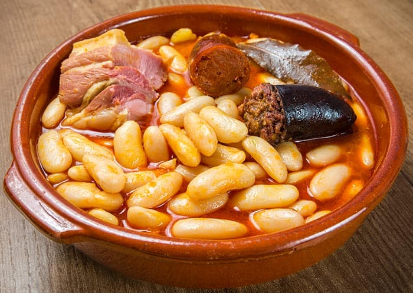

Tiempo:
Preparación
30 mint
Cocción
3h y 30 mint
Total:
4 horas
Reposo:
Minimo 8 horas
Ingredientes
Para 4 personas:
Elaboracion
- Vamos a comenzar con el paso que toma más tiempo, pero que irónicamente es el más fácil (aunque toda la receta es fácil): el remojo de las fabes. Lo ideal es dejarlas remojando toda la noche, así que les buscaremos una buena cacerola o recipiente grande, donde quepan con el agua, sin problemas.
- Como para la receta tenemos que usar lacón o panceta, es probable que necesitemos desalarlo, según el producto que hayamos adquirido.
- Luego de pasada la noche, ya podremos continuar con la preparación de la fabada. Es conveniente enjuagar las fabes al sacarlas del remojo, y asegurarse de que no quede ningún residuo colado entre los granos, o de eliminar cualquier grano que no tenga buen aspecto.
- Luego vamos a preparar nuestros ingredientes para la cocción. Vamos a pelar los dos dientes de ajo, y también la cebolla.
- Depositaremos estos ingredientes en una olla grande, con un buen chorro de aceite de oliva, y añadiremos las fabes y la hoja de laurel.
- Luego llenaremos la olla con agua, hasta sobrepasar el nivel de los sólidos, por aproximadamente un par de dedos de líquido.
- Acto seguido, pondremos la cacerola a calentar. La idea es dejar que la preparación rompa a hervir, y entonces agregar un chorro de agua fría a la olla, para que la fabada retome la cocción normal.
- En el momento en el que la preparación vuelva a romper a hervor, agregaremos nuevamente un chorro de agua fría para contenerla. Haremos esto incluso una tercera vez.
- Una vez contenida la ebullición por tercera ocasión, será el momento de agregar "el compango" o las carnes, a la cocción.
- Luego, la olla se dejará en el fuego durante unas tres horas. Sin embargo, no hay que olvidarse de nuestra preparación. Es necesario venir a supervisarla con cierta frecuencia, para asegurarse de que no se quede sin líquido. Si eso pasa, hay que rehidratarla con más agua. También hay que cuidar que la intensidad del fuego esté entre media y baja, para que el líquido no se evapore demasiado rápido, y podremos aprovechar para, de vez en cuando, retirar con una cuchara la grasa que irán soltando los embutidos mientras se cocinan.
- LCuando ya vaya a terminarse el tiempo de cocción, vamos a probar las alubias. Si hace falta, hay que corregir la sazón con sal. En caso de añadir este último ingrediente, hay que revolver bien los granos antes de apagar la cocina.
- Los amantes de receta tradicional de fabada asturiana, dejan un buen tiempo de reposo después de retirar este potaje del fuego. Con frecuencia, este tiempo suele ser de otra noche completa, y en principio, contribuye a que el plato tome una consistencia más espesa. También es posible aplastar unos cuantos fabes con un tenedor o contra un lado de la olla, para espesar el plato.
- Evidentemente, después de dejar reposar la fabada, habrá que recalentarla. Para servirla, lo más común es disponer los granos en un plato hondo, por persona, y al lado servir una parte de las carnes.